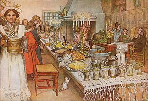

Christmas Eve
Christmas Eve adalah hari raya untuk memperingati lahirnya Yesus. Christmas Eve diadakan setiap tanggal 24 Desember di malam hari.
Christmas Eve adalah malam sebelum hari kelahiran Yesus, dirayakan tanggal 24 Desember 2019. Tradisi ini didasarkan pada Kitab Kejadian : "Dan Allah menamai terang itu siang, dan gelap itu malam. Jadilah petang dan jadilah pagi, itulah hari pertama." Terdapat 2 jenis tradisi perayaan Christmas Eve, yaitu Gereja Barat dan Gereja Timur.
Tradisi Gereja Barat
Dalam beberapa tahun terakhir, beberapa gereja menjadwalkan Misa Tengah Malam dimulai jam 7 malam. Di Filipina, Misa ini diadakan selama 9 hari, dimulai tanggal 16 sampai 24. Misa ini dinamakan Misa Fajar karena diadakan jam 4-5 pagi. Di Gereja Skotlandia, tradisi ini disebut Watchnight, yang dilakukan dengan menyanyikan kidung Natal tepat malam hari.
Di Jerman dan Skandinavia, terdapat drama malam kelahiran Yesus yang disertai paduan suara dan organ. Di Britania Raya, King's College di Cambridge menyiarkan Nine Lessons and Carols yang menandakan dimulainya malam Natal di Britania Raya.
Tradisi Gereja Timur
Dalam tradisi gereja timur, malam Natal dikenal dengan nama Paramony, yang diadakan dengan berpuasa oleh umat Kristen. Dalam beberapa tradisi, puasa dilakukan sampai bintang pertama muncul.
Perayaan liturgi diadakan lebih awal pada hari sebelumnya, diikuti dengan Liturgi Suci dan Vesper. Perayaan ini diikuti dengan nyanyian ayat Perjanjian Lama.
Dalam tradisi ortodoks, setelah liturgi Vesper, keluarga kembali ke rumah dan mengikuti pesta makan dengan syarat tidak ada produk daging dan susu dan kembali ke gereja untuk mereayakan Misa Vigili Natal